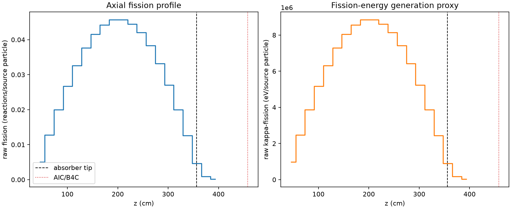
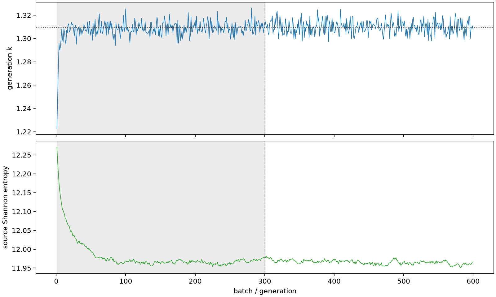

| field | value |
|---|---|
| experiment | V2-STAGE_128_OGRENCI_04-0013 |
| k | 1.309760982853547 |
| MC standard error | 0.00018410838518183092 |
| seconds | 982.0228072549999 |
| acceptance | not_assessed |
| convergence | review_required |
Completed is output integrity only; physical and statistical review required. Zero tallies do not prove zero production or zero uncertainty.
| diagnostic | value |
|---|---|
| geometric fuel voxels | 5280 |
| zero fission tally voxels | 0 |
| low signal fuel voxels | 0 |
| low signal fission share | 0.0 |
| low signal kappa share | 0.0 |
| important fission share | 0.9500363589541596 |
| previous filter included | 5280 |
| duration estimate s | 1562.5173488400023 |
| actual minus estimate s | -580.4945415850025 |
| fission relative MC error | statistics |
|---|---|
| all_geometric_fuel | {"voxels": 5280, "positive_mean_voxels": 5280, "zero_mean_voxels": 0, "undefined_relative_error_voxels": 0, "median": 0.010019092389279121, "p95": 0.07015073391250516, "maximum": 0.16282133721176162} |
| low_signal | {"voxels": 0, "positive_mean_voxels": 0, "zero_mean_voxels": 0, "undefined_relative_error_voxels": 0, "median": null, "p95": null, "maximum": null} |
| important_95pct | {"voxels": 3883, "positive_mean_voxels": 3883, "zero_mean_voxels": 0, "undefined_relative_error_voxels": 0, "median": 0.0090459907206555, "p95": 0.013848276832468425, "maximum": 0.0160860906413195} |
| outside_previous_filter | {"voxels": 0, "positive_mean_voxels": 0, "zero_mean_voxels": 0, "undefined_relative_error_voxels": 0, "median": null, "p95": null, "maximum": null} |
| kappa_fission relative MC error | statistics |
|---|---|
| all_geometric_fuel | {"voxels": 5280, "positive_mean_voxels": 5280, "zero_mean_voxels": 0, "undefined_relative_error_voxels": 0, "median": 0.010008814274108303, "p95": 0.07003288392287772, "maximum": 0.1625209503800587} |
| low_signal | {"voxels": 0, "positive_mean_voxels": 0, "zero_mean_voxels": 0, "undefined_relative_error_voxels": 0, "median": null, "p95": null, "maximum": null} |
| important_95pct | {"voxels": 3883, "positive_mean_voxels": 3883, "zero_mean_voxels": 0, "undefined_relative_error_voxels": 0, "median": 0.009036118754559293, "p95": 0.013834908574536226, "maximum": 0.0160706185881783} |
| outside_previous_filter | {"voxels": 0, "positive_mean_voxels": 0, "zero_mean_voxels": 0, "undefined_relative_error_voxels": 0, "median": null, "p95": null, "maximum": null} |
| axial bin | fission share | kappa-fission share |
|---|---|---|
| 1 | 0.009436630502026396 | 0.009437047992150407 |
| 2 | 0.02379965010764298 | 0.023799663512500326 |
| 3 | 0.03731701248679379 | 0.037316936102667154 |
| 4 | 0.049871351201378845 | 0.049871388776733507 |
| 5 | 0.060949584512752744 | 0.06094951665885017 |
| 6 | 0.0703609874523579 | 0.07036070716776767 |
| 7 | 0.07763171987572048 | 0.07763138886246498 |
| 8 | 0.0826703229081951 | 0.08267017172723383 |
| 9 | 0.08531926410678933 | 0.08531899561692836 |
| 10 | 0.08532512391477778 | 0.08532520910496692 |
| 11 | 0.08309955259724107 | 0.08309947030322576 |
| 12 | 0.07856623748358053 | 0.07856600068583408 |
| 13 | 0.07157522706213093 | 0.07157497359996026 |
| 14 | 0.06197182752374663 | 0.0619716216872517 |
| 15 | 0.050543596590102435 | 0.050543416434642746 |
| 16 | 0.03741045199280925 | 0.03741038795550315 |
| 17 | 0.02355967688060346 | 0.02355968869394366 |
| 18 | 0.008657232320742168 | 0.008658168964463402 |
| 19 | 0.0016316318231545436 | 0.0016321883759962523 |
| 20 | 0.0003029186574535405 | 0.00030305777691569825 |
Histories include the inactive-to-active transition at batch 300. kappa-fission approximates fission energy production, not total heat deposition.

